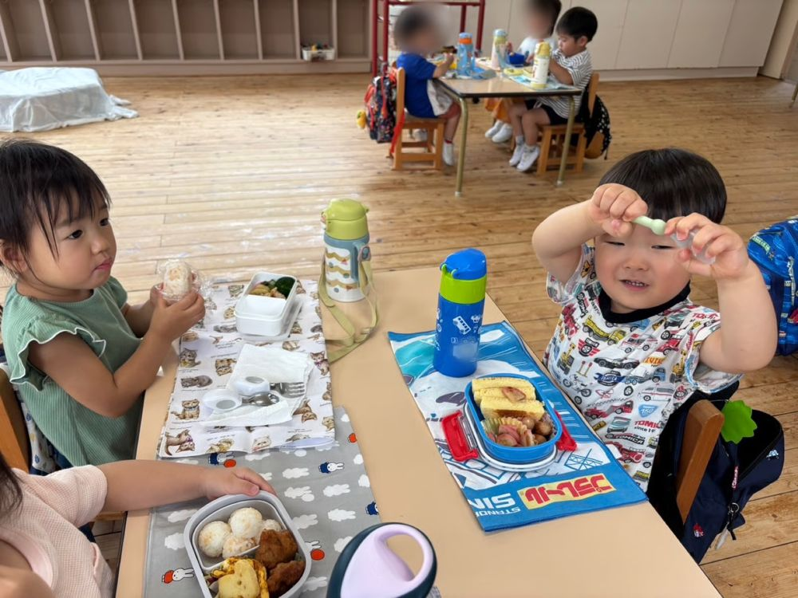
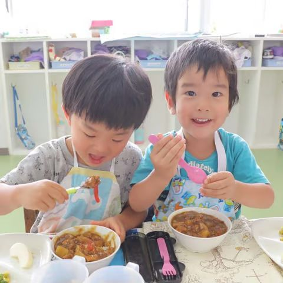
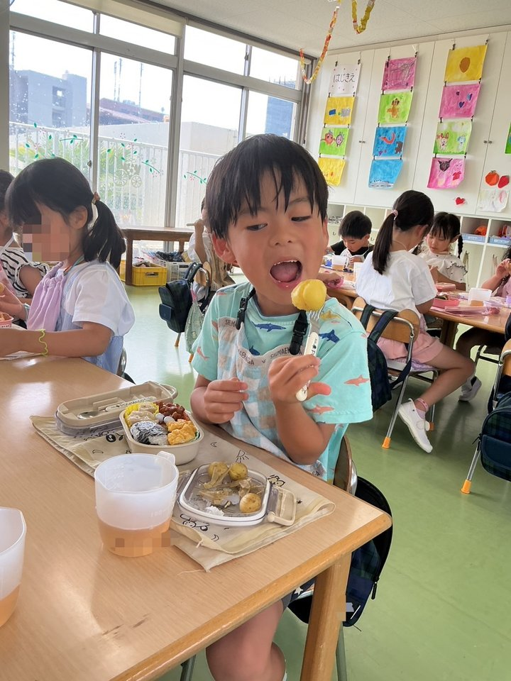
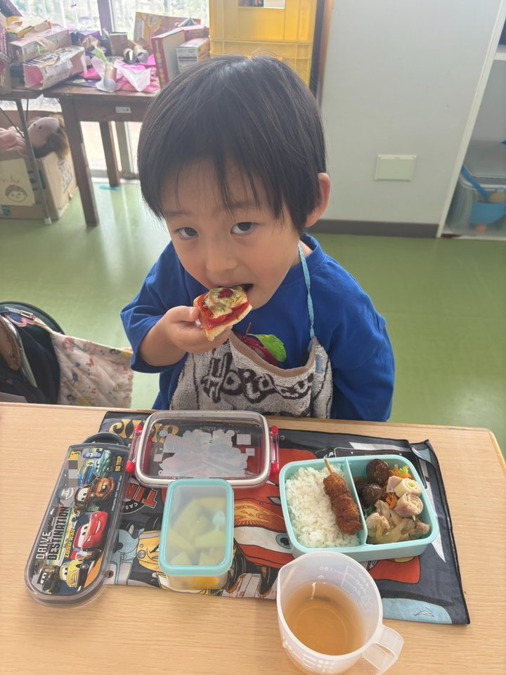
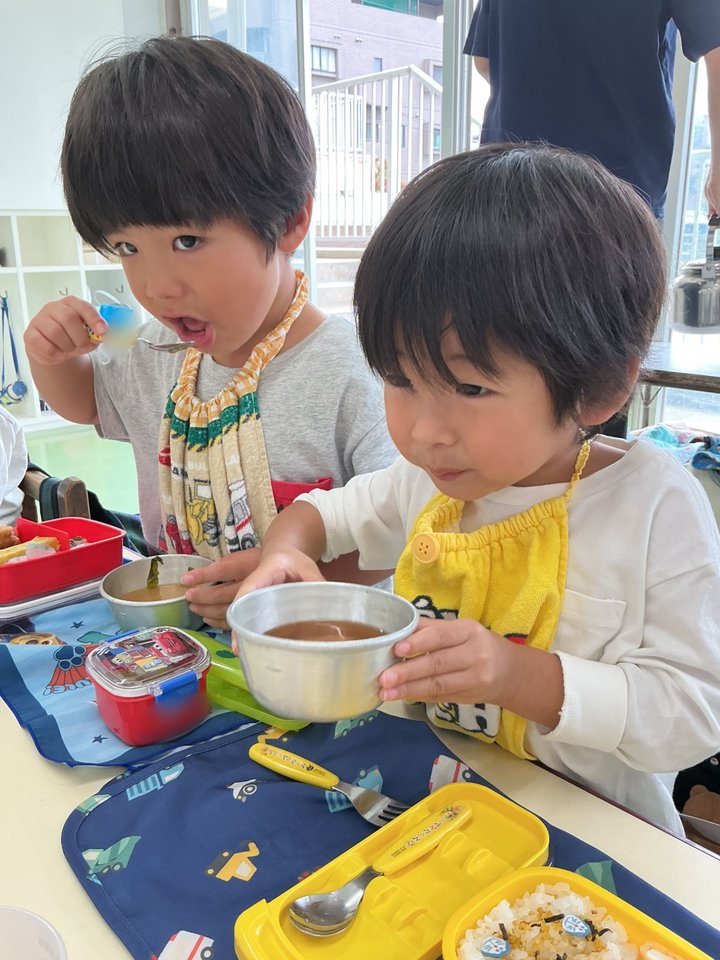
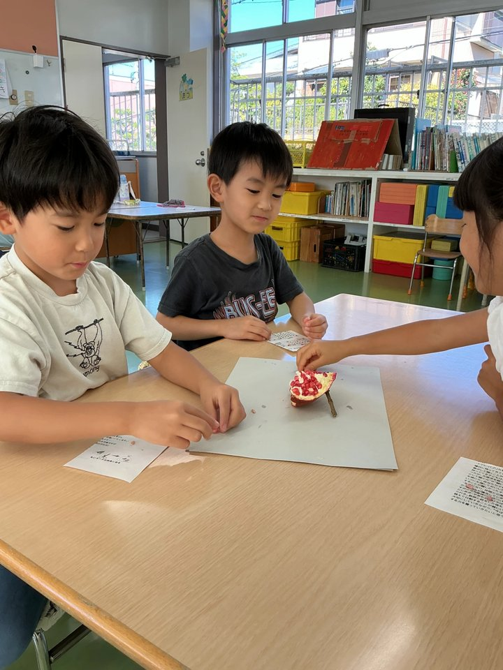

← 前へ
1週間のお昼ごはん
週1回、月曜日はお弁当持参で、火曜日から金曜日の4日間は給食です。
月曜日お弁当
お母さんの心のこもったお弁当は、子どもにとってたいへん楽しみなものです。

火曜日〜金曜日園内調理の給食
- 給食は園内の給食室で作られており、毎回、出来立ての温かい昼食をいただきます。
- みんなと同じものを一緒に食べることも、うれしいことの一つです。
- 献立の作成や調理は業者に委託していますが、代々受け継がれてきた、わかば幼稚園ならではのメニューも加えられています。

園で採れた野菜や果物も、いただきます
園内では、季節ごとにいろいろな野菜や果物が採れます。採れたものは料理して、お弁当や給食の時間に、みんなでいただきます。
自分たちの園で採れた野菜や果物の味は、また格別です。
たとえば、こんなものが採れます
- じゃがいも
- さつまいも
- 小松菜
- ミニトマト
- パプリカ
- 枝豆
- 梅
- 夏みかん
- 柿
- ざくろ

自分で採ったじゃがいも、いただきます！

園の野菜をのせて、ピザトーストに

園の野菜が入った、あったかいみそしる

ざくろの実を、ひと粒ずつ取り出して
食物アレルギーへの対応
食物アレルギーのある子どもには、対応した特別食が作られます。